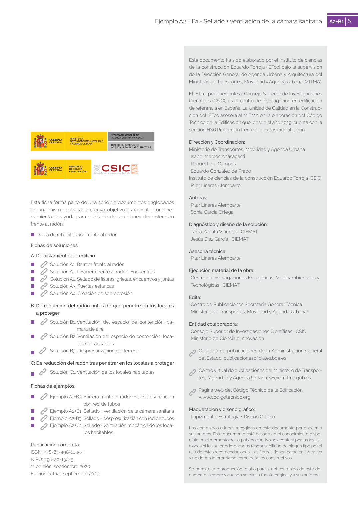

GUIA · 6. EFECTIVIDAD · versión 2019 · capa guia
Formatos: JSON compacto · Markdown · PDF fuente
Ámbito del documento · texto del ámbito · documento y tablas
Tipo: tablas, figuras · nivel 1 · sección estimada: 6. EFECTIVIDAD · padre:
6. EFECTIVIDAD Después del sellado de los puntos críticos detectados y de la mejora de la ventilación de la cámara sanitaria, el promedio de concentración de radón se reduce de 380 Bq/m3 a 200 Bq/m3. Reducción de la concentración promedio de un 47% frente a la concentración previa a la intervención. 5 Ejemplo A2 + B1 • Sellado + ventilación de la cámara sanitaria

PDF fuente redistribuible: copia fiel enlazada en esta página (SHA256 verificado).